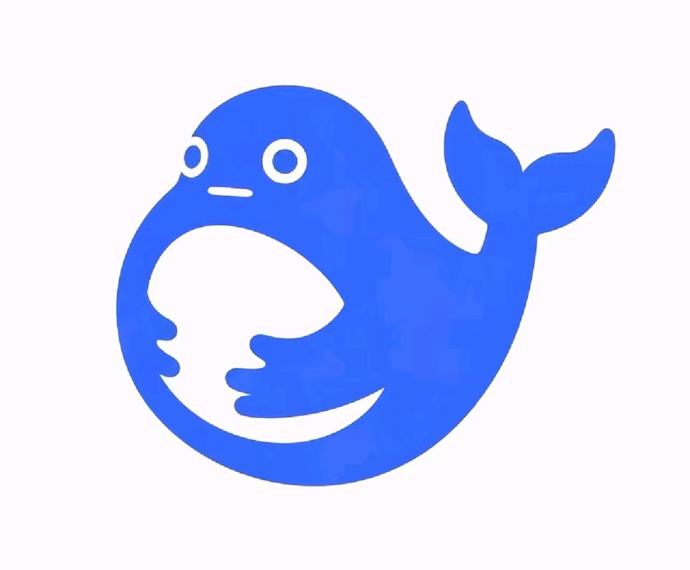

👾𝓽𝓱𝓮𝓯𝓸𝓻𝓮𝓿𝓮𝓻𝓲𝓻𝓲𝓼🍥
@theforeveriris
找个男朋友
身体心理健康、身高、体重无要求
技能方面：
- 拥有 opc zen，cursor ultra，codex 20x，claude 20x
- 拥有 AWS/Oracle/Azure/Google Cloud/阿里云等 VPS 和 GPU 实例
- 精通 Python，Golang，TypeScript，可以随时回答我的问题
- 没事不要出现在我面前

Zero（私人版）
@GCZZero
找个男朋友，没什么过分要求，只要身体健康
身体要求：
身高150~175cm
体重45~65kg
技能方面
1.3年以上运维/devops/研发等相关经验;
2.熟悉k8s核心原理，负责高可用、高并发运维系统架构设计和部分核心代码研发;
3.熟悉Kubernetes技术生态，具备在规模化场景下使用并深度熟悉原理，具备二次开发能力; https://t.co/HmMtw4ldjL